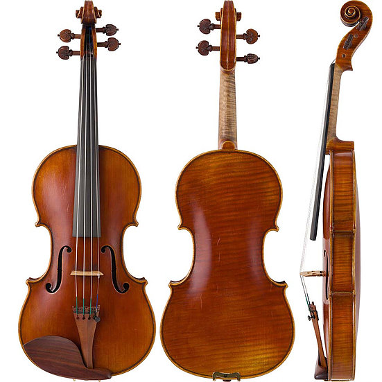

小提琴介绍
图片是小提琴Josephine， 陳昌鉉2012年生涯最后的作品。他依靠稀有的百年古木材和卓越的技术, 创造出了美妙和弦！
JIN工房采用非常罕见的古木材来制作小提琴，此种木材出土于欧洲教堂改建时期。 其小提琴具有古典乐器般的魅力，丰富的和声，音色深沉圆润又纯净，宏大音量可穿透到任何地方。
更多提琴信息，可在前往 优酷视频， 去感受JIN工房的提琴音色。
图片是小提琴Josephine， 陳昌鉉2012年生涯最后的作品。他依靠稀有的百年古木材和卓越的技术, 创造出了美妙和弦！
JIN工房采用非常罕见的古木材来制作小提琴，此种木材出土于欧洲教堂改建时期。 其小提琴具有古典乐器般的魅力，丰富的和声，音色深沉圆润又纯净，宏大音量可穿透到任何地方。
更多提琴信息，可在前往 优酷视频， 去感受JIN工房的提琴音色。
JIN工房国际上的著名客户有鄭京和( Kyung Wha Chung)，姜東錫(Dong-Suk Kang)， 艾萨克·斯特恩（Issac Stern），亨利克·谢林（Henryk Szeryng ）等世界顶级演奏大师。日本国内的客户有日本世纪交响乐团，皇室成员高円宮殿下等。
相关照片发表于博客
陳 昌鉉（1929-2012) 提琴制作人
JIN工房创始人。韩国出生，14岁来到日本。
1976年12月，在美国菲拉德尔斐亚的举办的第二届美国国际提琴制作比赛的六个部门中，他制作的提琴赢得了五项金牌，一跃成为世界提琴制作名匠。 1984年，美国小提琴制作协会授予他“无监察制琴师”（Hors Concours）资格和“国际提琴制作大师”（Master Maker）的称号。使其获得“东方斯特拉迪瓦里”美誉。全世界无监察提琴制作人，仅有五人得此殊荣。
2002年，根据口述编写的自传小说“跨越海峡的小提琴”（河内书房新社）出版发行 。其半生的记录，在2003年被山本修改编为传记漫画“天上之弦”，2004年拍成电视剧"跨越海峡的小提琴"。另外，他的故事还编进三友社出版的高中英文教科书中。
陳 昌鼓 提琴制作人
制琴大师陈昌铉的长子。 自幼随父亲专研学习制作提琴，成年后继承父亲衣钵，踏进制琴行业。 父亲去世以后，他用父亲遗留下来的百年以上古木材料和其父亲用毕生精力在全世界追寻的清漆，继续提琴制作。 他制作的提琴主要提供给活跃在日本和国际上的专业小提琴演奏家。 作为JIN工房的继承人，还参与众多电视节目的制作来推广小提琴的启蒙活动。
陳 昌龍 琴弓制作人
制琴大师陈昌铉的次子。 从1987年到1990年在美国纽约州的WILLAM SALCHOW专卖店学习琴弓的制作，修理，鉴定等方面的知识。 在店里，他曾负责为顶级音乐家，如伊扎克·帕尔曼等更换弓毛。 在JIN工房里，他使用百年的古木材，用古老的技术制作琴弓。 目前，他制作的琴弓提供给德永二男先生，毛利伯郎先生等日本国内外的演奏家们使用。
邮件：jinkoboviolin@gmail.com
地址：東京都調布市緑ヶ丘2-37-12
电话：+81-8034986603
接受提琴的定制和购买，详情请用邮件或电话联系。
也欢迎您在来日旅游的时候访问JIN工房，来体验我们的130年古木材提琴。 访问请用电子邮件事先预约，可对应中文，日文，韩文，英文。